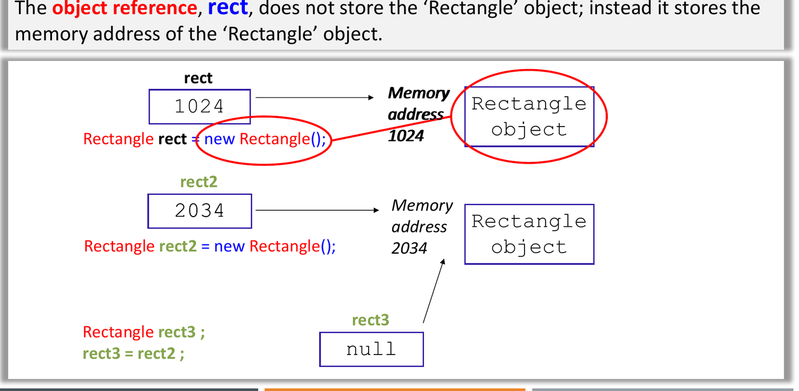
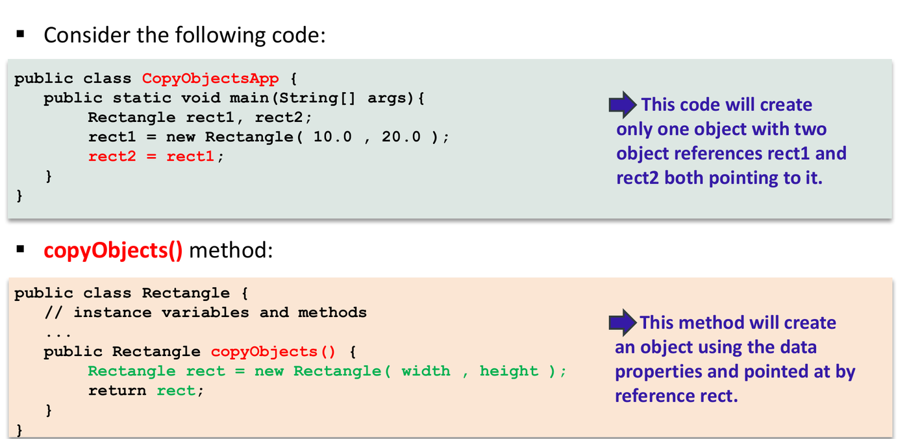

Classes, Objects and Encapsulation
This chapter covers Lectures 1 and 2. It gives the words that every later chapter uses, so learn the terms here first.
1. Procedural and Object-Oriented Programming
A procedural program (C, Pascal) is a list of steps. Functions change data that sits in shared memory, and any function can change any global variable.
An object-oriented (OO) program (Java, C++, C#) puts data and the functions that change that data together in one unit, the object. Objects do the work by sending messages to each other. One object cannot change the data of another object directly. It must ask that object through a method.
| Procedural (C) | Object-oriented (Java) | |
|---|---|---|
| Basic unit | Function | Object (data + methods) |
| Data | Global variables, any function can change them | Private fields inside each object |
| Work happens by | Function calls in sequence | Objects sending messages to objects |
| File name rule | Any name | A public class X must be in X.java |
How Java runs a program. The compiler
javac changes source code (.java) into
bytecode (.class). The Java
Virtual Machine (JVM) runs the bytecode. A just-in-time (JIT)
compiler in the JVM changes hot bytecode into machine code. Because
every platform has a JVM, the same .class file runs
anywhere (“compile once, run anywhere”). Java has no pointers, no
multiple inheritance of classes, and automatic garbage collection.
2. The Basic Terms
Four basic components of the OO model
- Object: one thing that has data (its state) and actions (its behaviour).
- Message: a request from one object to another
object to do a task. In Java, a message is a method call, for example
bill.comeDown(). - Method: the code that an object runs when it receives a message.
- Class: the template that all objects of one type share. It lists the fields and the methods.
Three characteristics of every object
| Characteristic | Meaning | Person example |
|---|---|---|
| Identity | What makes this object different from all other objects, even an object with the same values (the object identifier, OID). | Barack Obama, not Bill Gates |
| State | The current values of all its fields (attributes). | height 187 cm, age 49 |
| Behaviour | What the object can do: its methods. | eat, walk, sleep |
Class and object
- A class is a blueprint.
Personis a class. - An object is one instance made from the class.
obamais an object of classPerson. Making an object is instantiation. - The attributes (fields, instance variables) are the data. The methods are the behaviour.
To decide if a word is a class, an object, an attribute or a behaviour, ask:
- Is it a general type with many members? It is a
class (
Student,Book). - Is it one named member? It is an object
(
MichaelJackson,Person1). - Is it a value that describes a thing? It is an
attribute (
Age,Color). - Is it an action? It is a behaviour
(
Work,Shoot).
The four main OO concepts
| Concept | One-line meaning |
|---|---|
| Abstraction | Keep only the features that matter for the task. Hide the rest. A
Car class in a parking system needs a plate number, not the
engine design. |
| Encapsulation / information hiding | Put the data and its methods in one class. Make the data private. Other code uses the data only through public methods. |
| Inheritance | Make a new class from an existing class. The new class gets the fields and methods of the old class (“is-a”). See Chapter 2. |
| Polymorphism | “Many forms”. Send the same message to different objects, and each object does the version that suits its class. See Chapter 4. |
Abstraction (Booch): “the essential characteristics of an object that distinguish it from all other kinds of objects, relative to the perspective of the viewer”. The last part is important: the same real thing gives different classes in different systems.
3. Encapsulation and Information Hiding
These two terms are close, but they are not the same. Questions often ask for the difference.
- Encapsulation puts a barrier around the private data of an object. Other code gets to the data only through the public methods of the class (for example, get and set methods).
- Information hiding hides how the class does its work. A user of the class knows what each method does and how to call it. The user does not know the method body or the private fields.
In Java, you get both with private fields and
public methods. The set of public method headers and public
constants is the class’s API (application programming
interface). The private fields and all method bodies are the
implementation.
Benefits: the class protects its data (a setter can reject a bad value), and you can change the implementation without changing any code that uses the class.
4. Writing a Class
public class Rectangle {
// class constants: one copy, cannot change
public static final double MAX_WIDTH = 100;
// class (static) variable: one copy shared by all Rectangle objects
private static int numRectangles = 0;
// instance variables: each object has its own copy
private double width;
private double height;
// constructors
public Rectangle() {
this(1.0, 1.0); // call the other constructor
}
public Rectangle(double width, double height) {
this.width = width; // this.width is the field
this.height = height; // height alone is the parameter
numRectangles++;
}
// accessor (get) and mutator (set)
public double getWidth() { return width; }
public void setWidth(double w) {
width = (w >= MAX_WIDTH) ? MAX_WIDTH : w; // keep the data valid
}
// instance method: uses the fields of one object
public double findArea() { return width * height; }
// class method: does not use any object
public static int getNumRectangles() { return numRectangles; }
}A method header has this format:
public <static> ReturnType methodName(ParameterList).
Use void if the method returns nothing.
Naming rules
| Style | Example | Use for |
|---|---|---|
| lowercase | packagename |
Packages |
UPPERCASE with _ |
MAX_HOURS |
Constants, enum values |
| UpperCamelCase | CustomerAccount |
Classes, interfaces |
| lowerCamelCase | customerFirstName |
Methods, variables |
5. Objects in Memory
A variable holds a reference, not the object
Rectangle rect = new Rectangle(); does two things:
Rectangle rectmakes a reference variable. It can hold the memory address of aRectangleobject.new Rectangle()makes the object in memory (on the heap), runs a constructor, and gives back the object’s address. The=puts that address inrect.
A reference that points to no object holds null. If you
call a method through a null reference, Java throws a
NullPointerException.

Copying a reference is not copying an object
Rectangle r1 = new Rectangle(10, 20);
Rectangle r2 = r1; // ONE object, TWO references
r2.setWidth(50);
System.out.println(r1.getWidth()); // 50.0, because r1 and r2 share the objectTo get a second, separate object, call new again (for
example, a copyObject() method that returns
new Rectangle(width, height)).

Primitives are different. An int,
double, char or boolean variable
holds the value itself. int j = i; copies the value. A
later change to i does not change j.
Java always passes arguments by value. For a primitive, the method gets a copy of the value. For an object, the method gets a copy of the reference. So the method can change the object’s fields through that reference, but if the method assigns a new object to its parameter, the caller’s variable does not change.
Default values
- Fields (instance and static) get a default value when the object is
made:
0,0.0,false,'\u0000'ornull. - Local variables get no default. If you read a local variable before you give it a value, the compiler gives an error (“might not have been initialized”).
6. Constructors
A constructor sets the start values of a new object.
It has the same name as the class and no return type (not even
void).
- If you write no constructor, Java adds a default constructor with no parameters and an empty body.
- If you write any constructor, Java does
not add the default one.
new Rectangle()then fails to compile unless you wrote a no-argument constructor yourself. - You can overload constructors: write several with different parameter lists.
this(...)calls another constructor of the same class. It must be the first statement in the constructor.
No destructor. Java has no destructor. The
garbage collector frees an object when no reference
points to it. Before it frees the object, it can call the object’s
finalize() method (the finalizer).
7. The Keyword this
this is a reference to the current object: the object
that received the message. Uses:
- Fix name clashes. When a parameter has the same
name as a field, the parameter hides the field.
this.width = width;puts the parameter value in the field. Withoutthis,width = width;assigns the parameter to itself and the field stays0. - Call another constructor:
this(1.0, 1.0);(first line only). - Call a method of the same object:
this.findArea(). If you write onlyfindArea(), Java addsthis.for you. - Pass or return the current object:
new ClassB(this),return this;.
super is the matching keyword for the parent class. See
Chapter 2.
8. Accessors and Mutators
- An accessor (getter,
getX()) returns the value of a field. - A mutator (setter,
setX(value)) changes a field. It is the place to check the new value, so the object always stays valid (data consistency).
Code outside the class can change a public field directly,
but that is bad OO design. Make fields private and give
methods.
9. The Keyword static
| Instance member | Static (class) member | |
|---|---|---|
| Belongs to | One object | The class |
| Copies in memory | One per object | One for the whole class |
| Call it with | objectRef.method() |
ClassName.method() |
| Can use instance fields and methods | Yes | No: there is no this |
| Can use static fields and methods | Yes | Yes |
| Example | rect.findArea() |
Math.sqrt(2),
Rectangle.getNumRectangles() |
- A static variable is good for a value that all objects share, such as a count of objects made. When one object changes it, all objects see the new value.
- A static method cannot call an instance method or read an instance
field directly.
findArea()inside a static method is a compile error, because there is no current object. - You can call a static method through an object reference
(
a1.getCount()). Java uses the class of the declared type, not the object. This is legal but bad style. static finalmakes a class constant. Write it in UPPERCASE. A constant is easy to change in one place and its name explains the value.
10. Object Composition (“has-a”)
A class can have a field whose type is another class. This is
object composition: the object holds a reference to
another object. It is a “has-a” relationship. A Student has
a Course:
public class Course {
private int courseId;
private int score;
public Course(int courseId, int score) { this.courseId = courseId; this.score = score; }
public int getScore() { return score; }
}
public class Student {
private String name;
private Course course; // composition: a reference field
public Student(String name, Course course) {
this.name = name;
this.course = course;
}
public void printInfo() {
System.out.println(name + " scored " + course.getScore());
}
}The field can also be an array
(private Course[] courses = new Course[3];) or a
collection, so one object holds many objects. Chapter 6 shows how UML
divides “has-a” into association, aggregation and composition.
Defensive copies
A reference field can leak. If a constructor stores a caller’s array or mutable object directly, the caller can still change it from outside. If a getter returns the field directly, any caller can change it.
- In the constructor, make a new array or object and copy the values in.
- In the getter, return a copy, not the field.
11. Strings
String is a class in java.lang. A string is
always an object.
String s1 = "Java";
String s2 = "Java";
String s3 = new String("Java");
s1 == s2 // true: both point to one literal in the string pool
s1 == s3 // false: new always makes a separate object
s1.equals(s3) // true: same characters==on two references compares addresses: are they the same object?.equals()compares content, if the class overrides it (Stringdoes). If a class does not overrideequals, it acts the same as==.- Strings are immutable. A method such as
toUpperCase()returns a new string; it does not change the old one.s = "I love Java";makesspoint to a new object. Any other variable that pointed to the old string still sees the old value. - Useful methods:
length(),charAt(i)(index starts at 0),equals,equalsIgnoreCase,substring,toUpperCase. +with aStringjoins text, and Java works from left to right:"a" + 1 + 2gives"a12", but1 + 2 + "a"gives"3a".
12. What Happens During
new
When new SubClass(...) runs, Java does these steps in
this order:
- Get memory for the whole object, including the fields from all
parent classes. Set every field to its default (
0,false,null). - Start the subclass constructor. Its first action is to call the
parent constructor (
super(...), written or added by the compiler). This repeats up toObject. - For each class from the top down: run that class’s field
initialisers (
int x = 5;) in the order they are written, then the rest of that class’s constructor body.
Trap: an overridden method called from a parent constructor. In step 3, the parent constructor runs before the child’s field initialisers. If the parent constructor calls a method that the child overrides, Java runs the child’s version (dynamic binding, Chapter 4). That method sees the child’s fields still at their default values.
class Shape { Shape() { System.out.println("area = " + area()); }
double area() { return 0; } }
class Square extends Shape {
double side = 4;
Square() { System.out.println("area = " + area()); }
double area() { return side * side; }
}
new Square(); // prints "area = 0.0" then "area = 16.0"The first line is 0.0 because side is still
0 when Shape() runs.
13. Quiz Traps
- A class is a type; an object is one instance. “The schoolbag Justin carries” is an object; “schoolbag” is a class.
r2 = r1makes one object with two references. A change throughr2shows throughr1.int j = i;copies the value. Strings are immutable, sostr2 = str; str = "new";leavesstr2with the old text.- Writing any constructor removes the free default constructor.
width = width;in a constructor (nothis) leaves the field at0.- A static method cannot use instance fields or
this. A static field is shared:a1.s = 100also changesa2.s. An instance field is not shared. - A local variable has no default value; a field has one.
==compares addresses;equalscompares content (forString).- An overridden method called from a parent constructor sees the child’s fields at their default values.